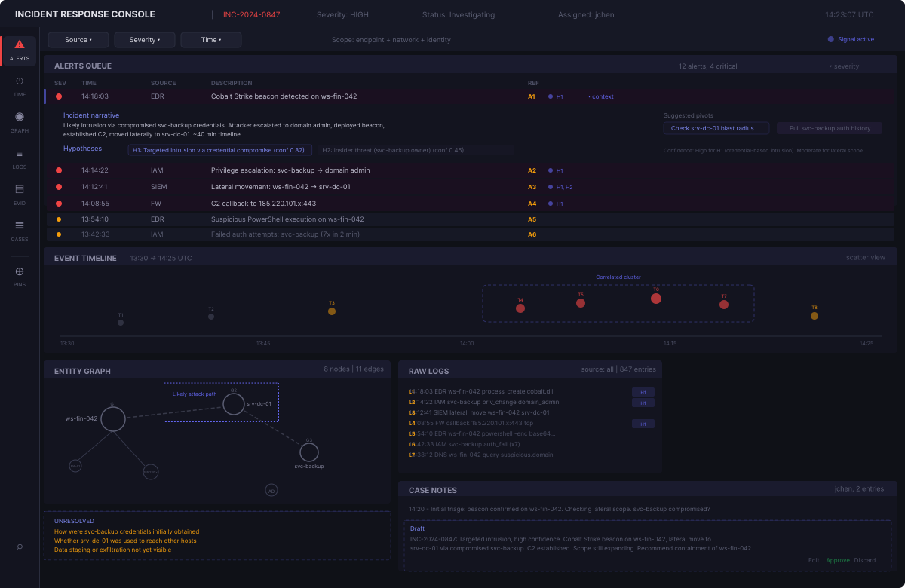
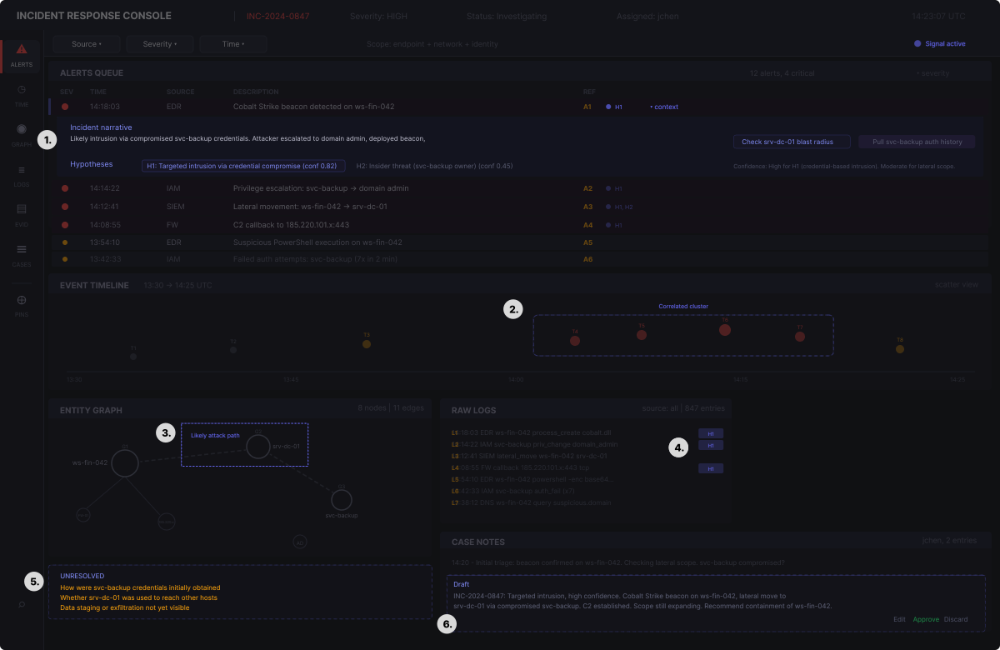
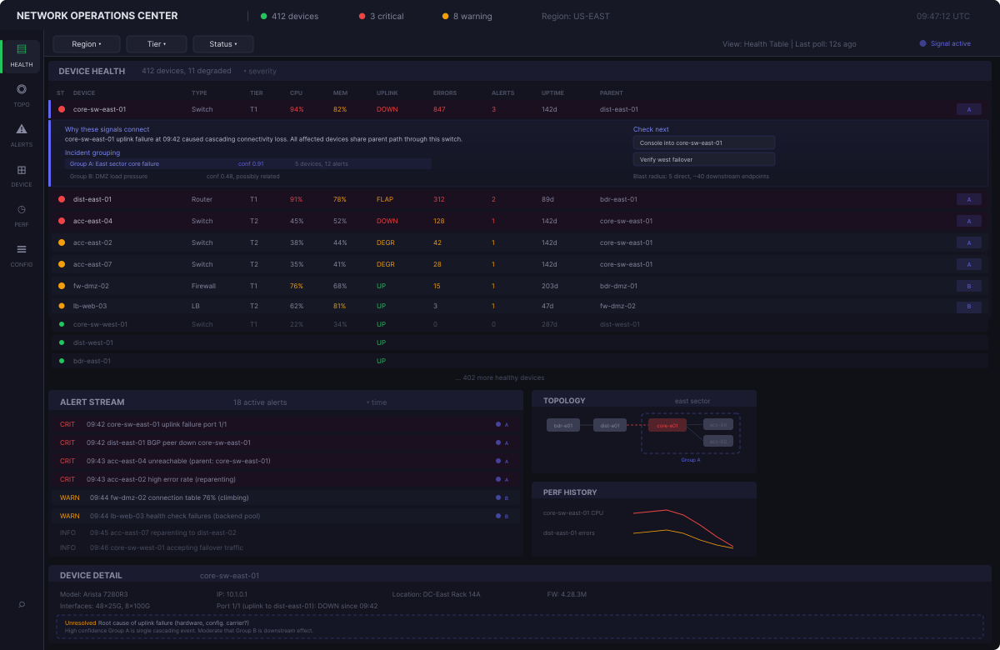
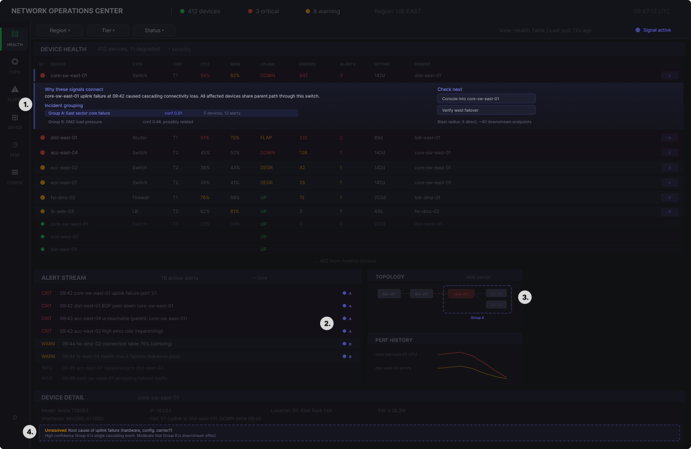
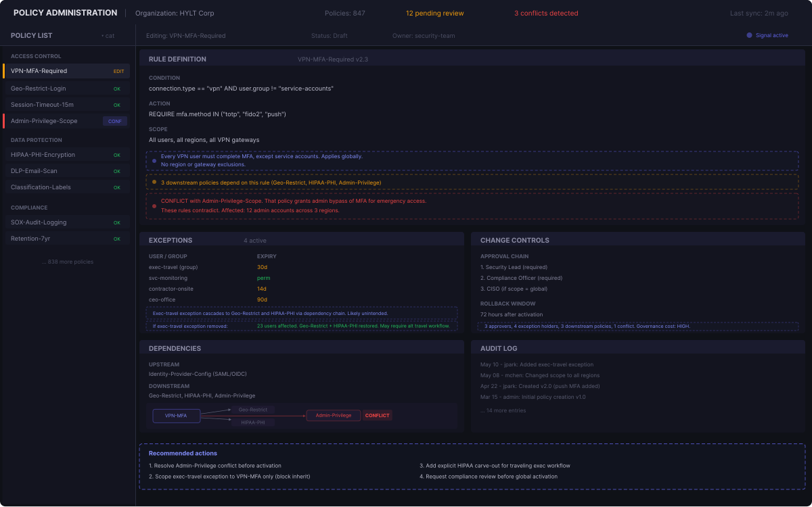
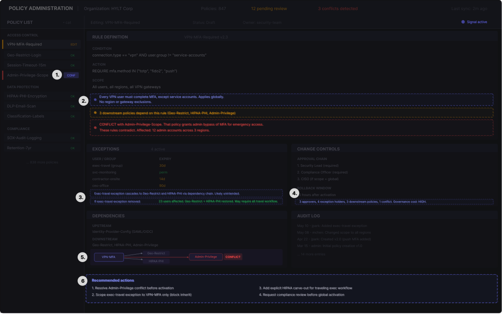
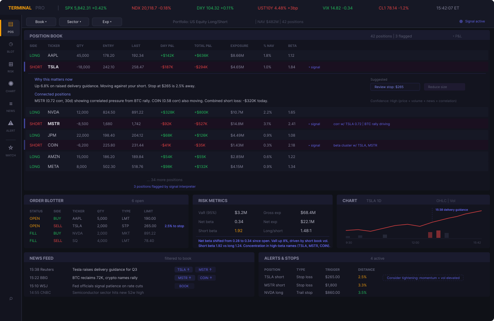
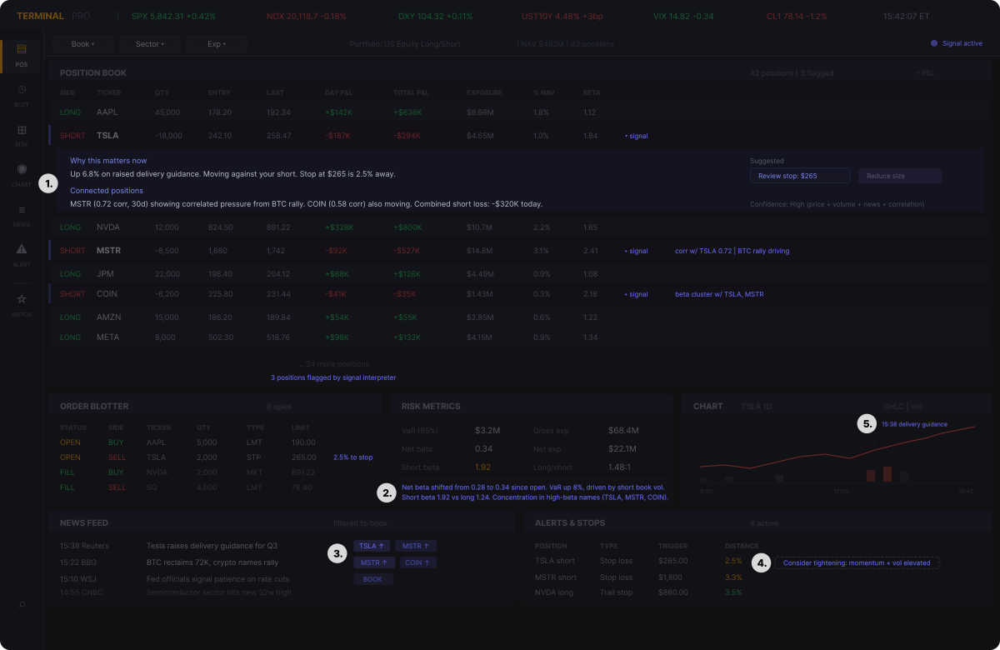

One thing I keep noticing in expert tools is how quickly the conversation around AI collapses into interface patterns.
Add a side panel. Add a chat assistant. Add a prompt box.
But that is not really the design problem I see.
In expert products like security consoles, network operations platforms, and financial terminals, what users rely on is not just the visible interface. Over time they develop a feel for the product's deeper logic: where signal tends to show up, where proof lives, how interpretation starts to form, and which paths hold up when the pressure is on.
The tool becomes more than a set of screens — it becomes a learned structure for how the work gets done.
That is what makes agent integration hard for these expert tools.
Adding an agent that is supposed to interpret, prepare, suggest, remember, and sometimes act is not like adding one more feature. It means introducing a new participant into a working environment that already has an established logic, built over years through trust, repetition, and expert fluency.
I have seen a version of this dynamic before. When I led design at Infor, working across large enterprise platforms being moved from on-prem products to a broader cloud suite, I dealt with deeply ingrained expert users all the time. Their expertise was often one of the best sources of insight, but it could also become a major bottleneck to change. I used to call it "the tyranny of the super-user."
That tension matters again now with AI integrations. The people who know these systems best are often the first to push back on change, not because they are resistant by nature, but because they understand what even small disruptions can cost once a product has become part of how their work gets done.
In many products, the first answer to AI integration has been to slap a chat assistant to the side of the interface. That's probably safe, but not enough for an expert system.
We need to start tackling the hard work of how an agent should actually participate in the work. What should it be allowed to see? When should it step forward? How should it connect its output to evidence? How does it hand work back? And how do you make its role clear enough that the product still feels dependable to the people who know it best?
The grammar of expert tools
Every expert product has a logic that only really becomes visible once someone has spent enough time inside it. There are stable anchors that help people stay oriented, places where they know evidence lives, and places where interpretation starts to form.
Expert users know the shortest paths for moving between the two. They understand the grammar for moments where speed matters, where verification matters, and where judgment cannot be abstracted away.
That's the grammar I'm talking about. It's the structure that lets expertise take hold inside the product.
Once you look at expert tools that way, the design problem shifts from adding an assistant that answers questions to creating an interface for a working relationship, with context and user judgment at the center.
So I explored that through four small design experiments across security, network operations, policy administration, and financial position management.
These aren't meant to be full-on product designs — they're just vibe-designed ways I am trying out to test a specific question:
1. Security investigation: the agent as case-building partner
The first concept sits inside a security investigation console, where the division between evidence and interpretation is central to the work. An analyst moves across alerts, timelines, entity relationships, raw logs, and case notes, slowly building a case from incomplete and often messy signals. The problem is rarely that the data is missing from the tool. The problem is stitching it into something coherent without losing track of why one clue matters more than another.
The agent enters as a case-building partner. It flags the alerts that appear most relevant, surfaces a few plausible hypotheses and links them back to specific evidence, highlights correlated clusters on the timeline, traces a likely attack path through the entity graph, and drafts a case narrative directly inside the analyst's notes as the picture sharpens.
What matters is that it does not replace the investigation process. It does not hide the logs behind a clean summary or turn a working theory into a finished answer. The analyst still needs to inspect the underlying material, challenge the framing, reject the wrong hypothesis, approve or discard the drafted note, and keep the case open long enough for uncertainty to stay visible.


- Expanded alert context. The flagged alert opens inline to show the incident narrative, ranked hypotheses, and suggested next pivots. The analyst gets a working theory without leaving the alerts queue.
- Correlated cluster on timeline. The agent groups related events and highlights the cluster visually. This surfaces the burst pattern the analyst would otherwise need to spot manually.
- Attack path overlay. A suggested traversal path drawn over the entity graph in the analyst's own evidence view. Gives the analyst a starting thread to verify or reject.
- Hypothesis tags on log lines. Small markers linking individual log entries back to the hypotheses they support — keeping the connection between raw evidence and interpretation visible.
- Unresolved questions. Open gaps the agent cannot fill are surfaced explicitly, keeping uncertainty visible rather than burying it behind confident-sounding summaries.
- Draft case note. The agent prepares a draft summary directly inside the case notes panel. Approve, edit, or discard are all one action away.
2. Network operations: the agent as triage guide
The second concept sits inside a network operations console, where the core challenge is making sense of cascading failures fast enough to act on them. An operator watches a health table, an alert stream, a topology view, and device detail panels, trying to figure out which of the dozens of signals firing at once are actually the same problem.
A single upstream failure can produce forty downstream alerts, and separating the root from the noise takes pattern recognition under time pressure. The agent enters as a triage partner — grouping correlated signals into incident clusters, labeling the devices that belong to each group, overlaying those groupings on the topology, and flagging what to check next.
What matters is that it does not take over the triage process. It does not auto-resolve incidents or hide individual alerts behind a rolled-up summary. The operator still needs to console into the device, verify the grouping makes sense, and determine the actual root cause.


- Expanded triage context. The flagged device opens inline to show why the agent grouped these signals, what the blast radius looks like, and what to check next.
- Correlation markers on alert stream. Each alert is tagged with its incident group — letting the operator see at a glance which alerts are part of the same cascading failure.
- Cluster overlay on topology. The agent draws the incident boundary directly onto the topology view, without requiring a switch to a separate map or summary.
- Unresolved questions and confidence. Open uncertainties and confidence levels sit inside the device detail panel, keeping the operator grounded in what still needs verification.
3. Policy administration: the agent as consequence layer
The policy administration concept deals with defining rules, managing exceptions, and navigating the dependency chains that connect one policy to the rest of the system. The danger is not making a bad rule. The danger is making a reasonable rule that quietly breaks something three policies away.
The agent enters as a consequence analyst. It explains what a rule does in plain language, flags conflicts with other policies, traces exception spillover through the dependency chain, and surfaces the governance burden of the current configuration. When a conflict exists, the agent shows exactly which rules contradict and what would happen under different resolution paths.
What matters is that it does not make policy decisions. It does not auto-resolve conflicts or silently adjust scopes to avoid problems. The admin still needs to approve or reject changes, decide whether a conflict is acceptable, and send the change through the formal approval workflow.


- Conflict marker on policy list. A small flag on the list item itself, visible before the admin even opens the rule — putting the signal where scanning happens.
- Inline rule annotations. Plain language explanation, dependency warning, and conflict alert appear directly below the rule definition while editing.
- Spillover and impact in exceptions. The agent traces how an exception cascades through dependent policies and shows what would change if it were removed.
- Governance burden in change controls. A summary of approval complexity, exception count, and downstream exposure sits inside the change controls panel.
- Dependency chain visualization. The agent draws the policy dependency graph inside the dependencies panel, with the conflict highlighted.
- Recommended actions. Concrete next steps span the workspace. These are suggestions, not decisions — the admin still owns every action.
4. Financial position management: the agent as signal interpreter
A financial terminal has one of the most deeply learned structures of any expert tool. Traders do not just rely on data density. They rely on a working feel for how positions, orders, risk, charts, news, and alerts fit together in the moment.
The challenge isn't simply seeing information — it's knowing what matters to this book, this exposure, and this decision while markets are moving. If an agent is going to help here, it can't just replace that model with a generic summary of what the market is doing. It has to add interpretation that is specific to the trader's context.
The agent enters as a signal interpreter. It flags positions where conditions have changed enough to warrant a second look, surfaces correlations between positions that might not be obvious from the book alone, tags incoming news with the positions it affects, and annotates risk metrics when portfolio-level exposure shifts.
What matters is that it does not make trading decisions. It does not move stops, resize positions, or execute orders. The trader still needs to evaluate the signal, decide whether the thesis has changed, and maintain final control over every order.


- Expanded position context. The flagged position opens inline to show why it matters now, which other positions are connected, and what actions might be worth considering.
- Risk metric annotations. The agent annotates shifts in portfolio-level risk directly inside the risk panel — beta drift, VaR changes, and concentration warnings appear where the trader already checks exposure.
- Position relevance tags on news. Incoming headlines are tagged with the tickers they affect and the direction of impact, letting the trader scan the feed and immediately see what matters to their book.
- Suggested stop adjustment. The agent flags a stop that may need tightening based on momentum and volatility — the suggestion is visible; the decision stays with the trader.
- Chart event annotation. A vertical marker ties a price inflection to the news catalyst that drove it, connecting the chart to the news feed without requiring manual cross-referencing.
What these experiments suggest
This is just a rough exploration, but it starts to show a more useful way of thinking about agents in expert tools.
First, agents need a role, not just a place in the interface. The design problem becomes what function the agent serves inside the workflow, and whether that function is legible to the user.
Second, the strongest roles are usually bounded. The agent works best when it helps build understanding, preserve orientation, reveal consequence, or surface what matters in context. It works less well when it tries to replace the core logic of the tool itself.
Third, the agent has to stay close to the product's learned structure. In every example, the value of the agent depends on its ability to work within an existing logic of evidence, interpretation, and action. It can't float above the tool as a detached intelligence layer.
Fourth, evidence and judgment have to remain explicit. If an agent is going to interpret, suggest, or prepare work, its output needs to stay connected to visible evidence, system state, rules, or positions.
A few principles that fall out of this
- Preserve the anchors. If parts of the product carry orientation for expert users, those structures should not move casually.
- Add synthesis, not substitution. Agents are strongest when they help connect fragmented work, not when they try to replace the product's existing logic.
- Keep claims inspectable. Suggestions, summaries, and proposed next steps need to stay tied to evidence, rules, positions, or visible system state.
- Make the agent's role legible. If an agent is acting with some autonomy, the user should understand what kind of role it is playing and why it is stepping in.
- Protect user judgment. The more capable the agent becomes, the more important it is to keep judgment, accountability, and handoff clear.
- Work within the product's learned structure. Expert tools already contain a trusted way of working. Agents need to map onto that structure rather than ask users to reorganize themselves around the agent.
What I'm left thinking about
For a long time, one of the hardest design problems in enterprise software was figuring out how to improve entrenched tools without breaking the trust and fluency expert users had built inside them. That problem is back now, but in a more demanding form.
The challenge is how to make room inside these products for this new AI participant in the work. That takes more than attaching a chat assistant to the edge of the tool. It takes a clearer understanding of the learned structure expert users already rely on, and a more careful definition of the role an agent is actually meant to play.
The best AI integrations won't come from treating the agent as a layer dropped on top. They'll come from treating agentic participants as something that has to earn its place inside an established way of working.
To me, that feels like the real design task ahead of us: not just adding intelligence to expert systems, but figuring out what those systems need to become when expert humans are no longer working alone inside them.
Back to Blog